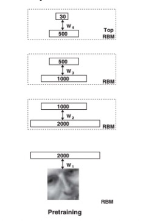
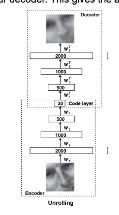
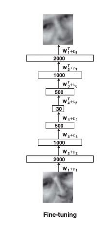
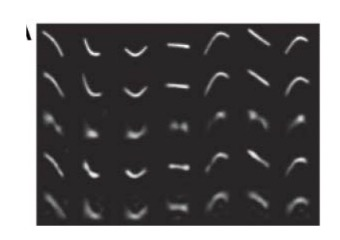
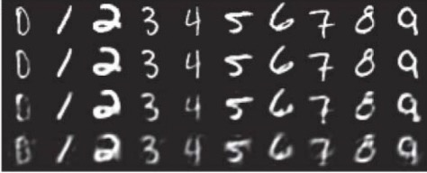
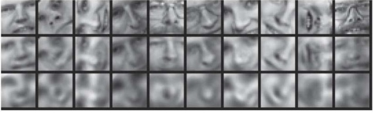
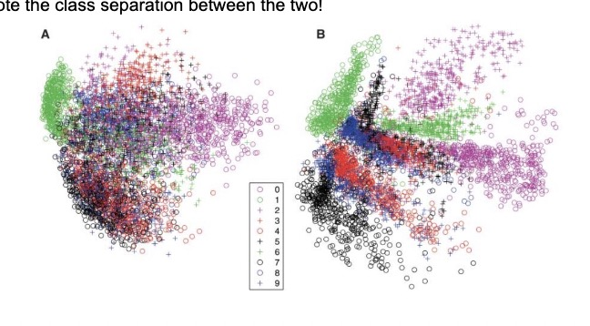
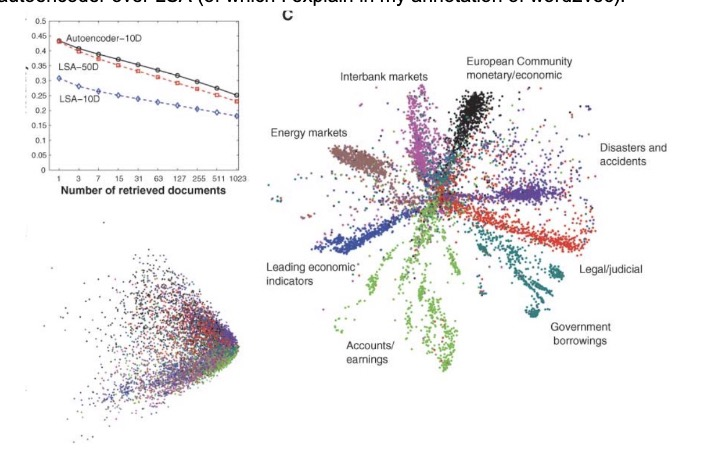

Reducing the Dimensionality of Data with Neural Networks
Annotated by: Noah Schliesman
“Like a historian, I interpret, select, discard, shape, simplify. Unlike a historian, I make up people’s thoughts”
~Hilary Mantel
Abstract
The authors use greedy layerwise pretraining with restricted Boltzman machines (RBMs) to develop an encoder, reducing the dimensionality at every layer until a code layer. Unrolling entails reversing the encoder from the code layer to the output. Lastly, fine tuning adjusts the full parameters of the autoencoders based on a common loss function. They achieve state-of-the-art results that outperform Principal Component Analysis (PCA).[1]
Introduction
The authors mention the rich history of PCA, which entails finding the directions of greatest variance in a data set via covariance eigendecomposition. This method is limited in the features it can capture, which motivates the notion of an autoencoder.
Large initial weights lead to poor local minima and small initial weights lead to vanishing gradients. To give a better weight initialization, we use pretraining.
In pretraining, RBMs are trained layer by layer. For example, we train the first layer on every training image, then move on to the next layer, and so forth.

For training, we want to compare the similarity between the visible and hidden units for each training example given its respective weight and bias.
Forward Pass
The probability of the hidden unit activation given all visible units is given as:
\[ \sigma(x) = \frac{1}{1 + e^{-x}} \]
\[ P(h_j = 1 \mid v) = \sigma(b_j + \sum_i v_i w_{ij}) \]
For each hidden unit \(h_j\), generate a random number \(r_j\) from a uniform distribution between 0 and 1. Set \(h_j = 1\) if \(r_j \leq P(h_j = 1 \mid v)\); otherwise set \(h_j = 0\).
We are concerned with calculating the similarity between computed hidden \(h_j\) and previous visible units in the data \(v_i\) (during the forward pass). All we need to do is compute the dot product for all visible-hidden unit pairs and average these products over all training examples \(N\):
\[ \langle v_i h_j \rangle_{\text{data}} = \frac{1}{N} \sum_{n=1}^{N} v_{in} h_{jn} \]
Backward Pass
Similarly, we aim to reconstruct the probability of the visible unit being activated given all hidden units sampled from the positive phase:
\[ P(v_i = 1 \mid h) = \sigma(a_i + \sum_j h_j w_{ij}) \]
For each visible unit \(v_i\), generate a random number \(r_i\) from a uniform distribution between 0 and 1. Set \(v'_i = 1\) if \(r_i \leq P(v_i = 1 \mid h)\); otherwise set \(v'_i = 0\).
Here, we compute the activation probabilities for hidden units based on \(v'\):
\[ P(h_j = 1 \mid v') = \sigma(b_j + \sum_i v'_i w_{ij}) \]
For each hidden unit \(h_j\), generate a random number \(r_j\) from a uniform distribution between 0 and 1. Set \(h'_j = 1\) if \(r_j \leq P(h_j = 1 \mid v')\); otherwise set \(h'_j = 0\).
We can compute the negative phase expectation by comparing the computed visible \(v'_i\) and sampled hidden units \(h'_j\):
\[ \langle v_i h_j \rangle_{\text{recon}} = \frac{1}{N} \sum_{n=1}^{N} v'_{in} h'_{jn} \]
Top Layer
For the top RBM layer, the activation probability for hidden and visible units is computed the same:
\[ P(h_j = 1 \mid v) = \sigma(b_j + \sum_i v_i w_{ij}) \]
\[ P(v_i = 1 \mid h) = \sigma(a_i + \sum_j h_j w_{ij}) \]
Instead of generating a random number from a uniform distribution and measuring its distance from unity, the hidden state is sampled from a Gaussian distribution with a mean of the activation probability and unit variance:
\[ h_j \sim \mathcal{N}(\mu_j, 1) \]
This process is known as Contrastive Divergence with a single Gibbs step (CD-1). If we repeat the steps in the backward pass (i.e., repeat the forward pass once then move onto the backward pass times with shared parameters), we can improve distribution accuracy at the cost of computational complexity.[2]
Analysis
The change in weight is simply the difference between the visible-hidden state similarity for the forward pass and the reconstructed visible-hidden state similarity for the backward pass. Let \(\epsilon\) be the learning rate:
\[ \Delta w_{ij} = \epsilon \left( \langle v_i h_j \rangle_{\text{data}} - \langle v_i h_j \rangle_{\text{recon}} \right) \]
This whole idea of reconstructing based on activation comes from an analysis of the energy of visible-hidden units. We must account for the contributions of biases of the visible units to the energy \(b_i v_i\). Similarly, we want to account for the contribution of biases to hidden units to the energy \(b_j h_j\). Lastly, we want to account for the interaction between visible units and hidden units given the weight between them \(v_i h_j w_{ij}\). This formulation yields the following energy function:
\[ E(v, h) = -\sum_{i \in \text{pixels}} b_i v_i - \sum_{j \in \text{features}} b_j h_j - \sum_{i, j} v_i h_j w_{ij} \]
We’re now motivated to find some partition function \(Z\) over all possible configurations of visible and hidden units:
\[ P(v, h) = \frac{e^{-E(v, h)}}{Z} \]
Since the computation of such a function is too large for a sufficiently large network, we can approximate our partition function using Annealed Importance Sampling (AIS).[3] AIS is described below.
First, define a sequence of distributions \(p_0, p_1, ..., p_n\), where \(p_0\) is a simple distribution from which sampling is easy and \(p_n\) is the target distribution.
Recall that a Markov chain is a probabilistic process that transitions from one state to the other depending on only the current state. The transition probability \(T_j(x, x')\) represents the probability of moving from state \(x\) to state \(x'\) under the Markov chain.
A distribution \(p_j\) is invariant under a stationary Markov chain with transition probabilities \(T_j\) if the probability of transitioning from state \(x'\) to state \(x\) matches the stationary distribution \(p_j\):
\[ p_j(x) = \sum_{x'} p_j(x') T_j(x', x) \]
From here, we choose a schedule for annealing, sample a point and simulate the Markov Chain to compute the importance weights for each sample using the ratio of probabilities and obtain \(Z\). This subject is slightly beyond the scope of the paper and I implore you to read Neal’s work in reference [3]. The big picture here is that:
\[ \frac{\partial P(v, h)}{\partial w_{ij}} = \Delta w_{ij} = \epsilon \left( \langle v_i h_j \rangle_{\text{data}} - \langle v_i h_j \rangle_{\text{recon}} \right) \]
From here, the process moves on to unrolling. We take the transpose of each weight and reverse the encoder to obtain our decoder. This gives the autoencoder the characteristic hourglass architecture.

Lastly, we fine tune the weights and biases in our autoencoder by minimizing the cross-entropy error. Let \(p_i\) be the intensity of pixel \(i\) and \(p'_i\) be the intensity of its reconstruction. Our cost function to minimize becomes:
\[ C = -\sum_i p_i \log p_i - \sum_i (1 - p_i) \log (1 - p_i) \]
Which results in the fine-tuned model.

Results
I’ve written a bit on PCA in my annotation of ImageNet Classification via a deep CNN, so feel free to check that out if you want a refresher. The autoencoder outperforms PCA pretty significantly on the five experiments.
The first test used random curves from a test data set at the top. From second to the top, we see the six-dimensional deep autoencoder which mimics the original test set. The next three are traditional PCA methods of recovery.

The second test used the MNIST dataset at the top, the 30-dimensional autoencoder second to top, and PCA methods below that.

The third test used input images from the Olivetti face data set at the top, the 30-dimensional autoencoder in the middle, and PCA at the bottom.

The fourth test compared the two-dimensional codes found by PCA (left) and the autoencoder (right). Note the class separation between the two!

The last test trained on documents given the 2000 most common word stems using cosine similarity. This is highly similar to the idea behind word2vec. We see the superior separation due to the autoencoder over LSA (of which I explain in my annotation of word2vec).

The authors develop a foundational architecture for neural networks to reduce the dimensionality of data. Such ideas were taken with stride in providing latent representations of higher dimensional data like words, voice, images, and anything we can sense. Similarly, the idea of encoding information into a smaller code layer and then decoding to generalize information has taken off, especially through that of the transformer architecture. While layerwise training is not necessarily as common, it does emphasize the necessity for reasonable weights as a form of pretraining.
References
- [1] Hinton, G. E., & Salakhutdinov, R. R. (2006). Reducing the dimensionality of data with neural networks. Science, 313(5786), 504-507. doi:10.1126/science.1127647
- [2] Hinton, G. E. (2002). Training products of experts by minimizing contrastive divergence. Neural Computation, 14(8), 1771-1800. doi:10.1162/089976602760128018
- [3] Neal, R. M. (1998). Annealed Importance Sampling. arXiv preprint arXiv/9803008v2.